This project explores the TMDb movie data set from Udacity's curated data site. The dataset can be found here and the project_03_01.ipynb is the jupyter script located in github repo subfolder here. The data set contains information on approximately 10,000 movies. Also brief overview can be found here.
Questions that will be investigated:
What were the 10 most profitable movies?
Find the most profitable movie in each genre?
What were the most profitable movies in each year?
What is the average lenght of movies in each genre?
Who are the top 10 most common movie directors?
Which movie directors made movies that made the most profit?
List the most profitable movie director in each genre?
Are there any directors that standout and appear in multiple genres for the top 10 movies directored?
Assumptions: While exploring the dataset, I assumed that :
profitablity of a movie = revenue - budget
References can be found here.
import numpy as np
import pandas as pd
import matplotlib as mpl
import matplotlib.pyplot as plt
import seaborn as sns
sns.set(style="whitegrid", color_codes=True)
import ipywidgets as wg
from ipywidgets import interact, interactive, fixed, interact_manual
from IPython.display import display
%matplotlib inline
#Function reads the movie dataset and formats the date
def read_format_file():
tmp=pd.read_csv('data/tmdb-movies.csv')
#convert release date to date format
release_date=pd.to_datetime(tmp['release_date'])
#add a profit column
tmp['profit']=tmp.revenue-tmp.budget
return tmp
df=read_format_file()
#df.head(2)
df.info()
<class 'pandas.core.frame.DataFrame'>
RangeIndex: 10866 entries, 0 to 10865
Data columns (total 22 columns):
id 10866 non-null int64
imdb_id 10856 non-null object
popularity 10866 non-null float64
budget 10866 non-null int64
revenue 10866 non-null int64
original_title 10866 non-null object
cast 10790 non-null object
homepage 2936 non-null object
director 10822 non-null object
tagline 8042 non-null object
keywords 9373 non-null object
overview 10862 non-null object
runtime 10866 non-null int64
genres 10843 non-null object
production_companies 9836 non-null object
release_date 10866 non-null object
vote_count 10866 non-null int64
vote_average 10866 non-null float64
release_year 10866 non-null int64
budget_adj 10866 non-null float64
revenue_adj 10866 non-null float64
profit 10866 non-null int64
dtypes: float64(4), int64(7), object(11)
memory usage: 1.8+ MB
Brief Overview of the Dataset
print('The movies analyzed are from ', df.release_year.min(),' to ',df.release_year.max(),'.',sep='',end='')
print(' The most profitable movie is ',df.iloc[df.profit.idxmax()].original_title,' with a budget of ',
'${:,.2f}'.format(df.iloc[df.profit.idxmax()].budget),' and revenue of ',
'${:,.2f}'.format(df.iloc[df.profit.idxmax()].revenue),' and profit of ',
'${:,.2f}'.format(df.iloc[df.profit.idxmax()].profit),'.',sep='', end='')
print(' ',df.iloc[df.profit.idxmin()].original_title,' was a finacial disaster as it lost ',
'${:,.2f}'.format(abs(df.iloc[df.profit.idxmin()].profit)),'.', sep='',end='')
#print(' next line test')
The movies analyzed are from 1960 to 2015. The most profitable movie is Avatar with a budget of $237,000,000.00 and revenue of $2,781,505,847.00 and profit of $2,544,505,847.00. The Warrior's Way was a finacial disaster as it lost $413,912,431.00.
What were the 10 most profitable movies?
#input: function takes the movie dataset and n - the top n number of profitable movies
#process: function finds the most profitable movies
#out: function returns a graph of most profitable movies
def top_profitable_movies(df,n):
tmp_01=df.sort_values(by=['profit'],ascending=False)[['original_title','release_year','profit']].head(n)
f, ax = plt.subplots(figsize=(10, 3))
ax=sns.stripplot(x="original_title", y='profit',hue='release_year',data=tmp_01)
ax.set_xticklabels(ax.get_xticklabels(),rotation=90,fontsize=15)
ax.set_title('Figure 01:Top '+ str(n) + ' Profitable Movies',fontsize=20)
ax.set_xlabel('Movie Names')
ax.set_ylabel('Profit Generated $');
top_profitable_movies(df,10)

Observation: As stated earlier, Avatar was the most profitable move that came out in 2009.Year 2015 was exciting for movie goers as there were 4 movies that attracted a lot of attention: Starwars:The Force Awakens, Jurassic World, Furious 7 and Avengers:Age of Ultron.
Find the most profitable movie in each genre?
#input: function takes in the movie dataset
#process: calculates the most profitable movie in each genre
#output: returns a dataframe of most profitable movie in each genre
def profitable_movies_in_each_genre(df):
genres=df['genres'].str.split('|', expand=True) #split the genres by |
tmp_01=pd.concat([df.profit,df.release_year,df.original_title,genres],axis=1)
#melt the genres columns into one column
tmp_02=pd.melt(tmp_01,id_vars=['profit','release_year','original_title'],value_name='genre')
tmp_02=tmp_02.drop(columns=['variable']) #drop variable column generated during melt
tmp_02=tmp_02.loc[tmp_02.genre.notna()] # remove nan, None from genre column
tmp_03=pd.concat([tmp_02.genre,tmp_02.profit],axis=1) #lets get the index first using only two columns
ind=tmp_03.groupby(['genre']).idxmax().reset_index().profit.values #get the index of most profitable genres
top_genres=tmp_02.loc[ind]
return top_genres
profitable_movies_in_each_genre(df)
| profit | release_year | original_title | genre | |
|---|---|---|---|---|
| 1386 | 2544505847 | 2009 | Avatar | Action |
| 12252 | 2544505847 | 2009 | Avatar | Adventure |
| 5422 | 1124219009 | 2013 | Frozen | Animation |
| 32606 | 1082730962 | 2015 | Minions | Comedy |
| 10870 | 1316249360 | 2015 | Furious 7 | Crime |
| 7049 | 113114517 | 2004 | Fahrenheit 9/11 | Documentary |
| 5231 | 1645034188 | 1997 | Titanic | Drama |
| 14240 | 1202817822 | 2011 | Harry Potter and the Deathly Hallows: Part 2 | Family |
| 23118 | 2544505847 | 2009 | Avatar | Fantasy |
| 24967 | 66900000 | 2008 | Ghajini | Foreign |
| 19840 | 411840909 | 1998 | Saving Private Ryan | History |
| 9806 | 463654000 | 1975 | Jaws | Horror |
| 40869 | 386006740 | 1992 | The Bodyguard | Music |
| 29826 | 1084279658 | 1995 | The Net | Mystery |
| 16097 | 1645034188 | 1997 | Titanic | Romance |
| 33984 | 2544505847 | 2009 | Avatar | Science Fiction |
| 8615 | 37000000 | 1996 | Doctor Who | TV Movie |
| 26963 | 1645034188 | 1997 | Titanic | Thriller |
| 19 | 490523427 | 2015 | The Hunger Games: Mockingjay - Part 2 | War |
| 31717 | 402208848 | 1990 | Dances with Wolves | Western |
Observation:Avatar (2009) was profitable in multiple genres: action, adventure, fantasy and sciene fiction. Its interesting to see that Jaws which came out in 1975 was most profitable in horror genre considering it was a very old movie but still holding its ground.Also, interesting to note that Titanic was most profitable in drama, romance and thriller. It seems that top profitable movies are profitable in multiple genres - although this could be further investigated.
What were the most profitable movies in each year?
#input: function takes the movie dataset
#process: function calculates the most profitable movie each year
#out: function returns a dataframe of most profitable movies per year
def profitable_movie_per_year(df):
ind=df.groupby('release_year')['profit'].idxmax().values
top_yearly_movies=df.iloc[ind][['release_year','original_title','genres','director','profit']]
return top_yearly_movies
profitable_movie_per_year(df)
| release_year | original_title | genres | director | profit | |
|---|---|---|---|---|---|
| 10143 | 1960 | Spartacus | Action|Drama|History | Stanley Kubrick | 48000000 |
| 10110 | 1961 | One Hundred and One Dalmatians | Adventure|Animation|Comedy|Family | Clyde Geronimi|Hamilton Luske|Wolfgang Reitherman | 211880014 |
| 9849 | 1962 | Dr. No | Adventure|Action|Thriller | Terence Young | 58500000 |
| 10438 | 1963 | From Russia With Love | Action|Thriller|Adventure | Terence Young | 76398765 |
| 9881 | 1964 | Goldfinger | Adventure|Action|Thriller | Guy Hamilton | 121400000 |
| 10690 | 1965 | The Sound of Music | Drama|Family|Music|Romance | Robert Wise | 155014286 |
| 10822 | 1966 | Who's Afraid of Virginia Woolf? | Drama | Mike Nichols | 26236689 |
| 10398 | 1967 | The Jungle Book | Family|Animation|Adventure | Wolfgang Reitherman | 201843612 |
| 9719 | 1968 | 2001: A Space Odyssey | Science Fiction|Mystery|Adventure | Stanley Kubrick | 44715371 |
| 10725 | 1969 | Butch Cassidy and the Sundance Kid | History|Drama|Western|Crime | George Roy Hill | 96308889 |
| 10654 | 1970 | Love Story | Drama|Romance | Arthur Hiller | 134200000 |
| 9925 | 1971 | Diamonds Are Forever | Adventure|Action|Thriller|Science Fiction | Guy Hamilton | 108800000 |
| 7269 | 1972 | The Godfather | Drama|Crime | Francis Ford Coppola | 239066411 |
| 10594 | 1973 | The Exorcist | Drama|Horror|Thriller | William Friedkin | 433306145 |
| 9767 | 1974 | Blazing Saddles | Comedy|Western | Mel Brooks | 116900000 |
| 9806 | 1975 | Jaws | Horror|Thriller|Adventure | Steven Spielberg | 463654000 |
| 10208 | 1976 | A Star Is Born | Drama|Music|Romance | Frank Pierson | 155000000 |
| 1329 | 1977 | Star Wars | Adventure|Action|Science Fiction | George Lucas | 764398007 |
| 10758 | 1978 | Superman | Adventure|Fantasy|Action|Science Fiction | Richard Donner | 245218018 |
| 7833 | 1979 | Rocky II | Drama | Sylvester Stallone | 193182160 |
| 7309 | 1980 | The Empire Strikes Back | Adventure|Action|Science Fiction | Irvin Kershner | 520400000 |
| 8375 | 1981 | Raiders of the Lost Ark | Adventure|Action | Steven Spielberg | 371925971 |
| 8889 | 1982 | E.T. the Extra-Terrestrial | Science Fiction|Adventure|Family|Fantasy | Steven Spielberg | 782410554 |
| 7987 | 1983 | Return of the Jedi | Adventure|Action|Science Fiction | Richard Marquand | 540350000 |
| 7883 | 1984 | Indiana Jones and the Temple of Doom | Adventure|Action | Steven Spielberg | 305000000 |
| 6081 | 1985 | Back to the Future | Adventure|Comedy|Science Fiction|Family | Robert Zemeckis | 362109762 |
| 10475 | 1986 | Top Gun | Drama|Action|Romance | Tony Scott | 341830601 |
| 9613 | 1987 | Fatal Attraction | Horror|Drama|Romance|Thriller | Adrian Lyne | 306145693 |
| 9454 | 1988 | Rain Man | Drama | Barry Levinson | 329825435 |
| 9180 | 1989 | Indiana Jones and the Last Crusade | Adventure|Action | Steven Spielberg | 426171806 |
| 9986 | 1990 | Ghost | Fantasy|Drama|Thriller|Mystery|Romance | Jerry Zucker | 483000000 |
| 9317 | 1991 | Terminator 2: Judgment Day | Action|Thriller|Science Fiction | James Cameron | 420000000 |
| 8243 | 1992 | Aladdin | Animation|Family|Comedy|Adventure|Fantasy | Ron Clements|John Musker | 476050219 |
| 10223 | 1993 | Jurassic Park | Adventure|Science Fiction | Steven Spielberg | 857100000 |
| 4180 | 1994 | The Lion King | Family|Animation|Drama | Roger Allers|Rob Minkoff | 743241776 |
| 8094 | 1995 | The Net | Crime|Drama|Mystery|Thriller|Action | Irwin Winkler | 1084279658 |
| 8457 | 1996 | Independence Day | Action|Adventure|Science Fiction | Roland Emmerich | 741969268 |
| 5231 | 1997 | Titanic | Drama|Romance|Thriller | James Cameron | 1645034188 |
| 8970 | 1998 | Armageddon | Action|Thriller|Science Fiction|Adventure | Michael Bay | 413799566 |
| 2412 | 1999 | Star Wars: Episode I - The Phantom Menace | Adventure|Action|Science Fiction | George Lucas | 809317558 |
| 8666 | 2000 | Mission: Impossible II | Adventure|Action|Thriller | John Woo | 421388105 |
| 2634 | 2001 | Harry Potter and the Philosopher's Stone | Adventure|Fantasy|Family | Chris Columbus | 851475550 |
| 3911 | 2002 | The Lord of the Rings: The Two Towers | Adventure|Fantasy|Action | Peter Jackson | 847287400 |
| 4949 | 2003 | The Lord of the Rings: The Return of the King | Adventure|Fantasy|Action | Peter Jackson | 1024888979 |
| 6977 | 2004 | Shrek 2 | Adventure|Animation|Comedy|Family|Fantasy | Andrew Adamson|Kelly Asbury|Conrad Vernon | 769838758 |
| 6190 | 2005 | Harry Potter and the Goblet of Fire | Adventure|Fantasy|Family | Mike Newell | 745921036 |
| 6555 | 2006 | Pirates of the Caribbean: Dead Man's Chest | Adventure|Fantasy|Action | Gore Verbinski | 865659812 |
| 7388 | 2007 | Harry Potter and the Order of the Phoenix | Adventure|Fantasy|Family|Mystery | David Yates | 788212738 |
| 2875 | 2008 | The Dark Knight | Drama|Action|Crime|Thriller | Christopher Nolan | 816921825 |
| 1386 | 2009 | Avatar | Action|Adventure|Fantasy|Science Fiction | James Cameron | 2544505847 |
| 1930 | 2010 | Toy Story 3 | Animation|Family|Comedy | Lee Unkrich | 863171911 |
| 3374 | 2011 | Harry Potter and the Deathly Hallows: Part 2 | Adventure|Family|Fantasy | David Yates | 1202817822 |
| 4361 | 2012 | The Avengers | Science Fiction|Action|Adventure | Joss Whedon | 1299557910 |
| 5422 | 2013 | Frozen | Animation|Adventure|Family | Chris Buck|Jennifer Lee | 1124219009 |
| 634 | 2014 | The Hobbit: The Battle of the Five Armies | Adventure|Fantasy | Peter Jackson | 705119788 |
| 3 | 2015 | Star Wars: The Force Awakens | Action|Adventure|Science Fiction|Fantasy | J.J. Abrams | 1868178225 |
Observation: These are movies that anyone could add to their movie list. Some successful movies have also led to creation of sequals such as Jaws 2, 3. Moves have multiple genres except for rocky II, rain man and Who's Afraid of Virginia Woolf?.
What is the average lenght of movies in each genre?
#input: function receives the movie dataset
#process: function calculates the average in each genre
#output: function returns a graph of mean running time of movies in each genre
def average_run_time(df):
genres=df['genres'].str.split('|', expand=True) #split the genres by |
tmp_01=pd.concat([df.original_title,df.imdb_id,df.runtime,genres],axis=1) #construct the data frame
tmp_02=pd.melt(tmp_01,id_vars=['original_title','imdb_id','runtime'],value_name='genre')
tmp_02=tmp_02.drop(columns=['variable']) #drop variable column generated during melt
tmp_02=tmp_02.loc[tmp_02.genre.notna()] # remove nan, None from genre column
tmp_03=tmp_02.groupby('genre').mean().reset_index().sort_values('runtime',ascending=False)
#tmp_03.head()
f, ax = plt.subplots(figsize=(15, 5))
ax=sns.barplot(x="genre", y='runtime',data=tmp_03)
ax.set_xticklabels(ax.get_xticklabels(),rotation=90,fontsize=15)
ax.set_title('Figure 02:Average Running Time Per Genre',fontsize=20)
ax.set_xlabel('Genre')
ax.hlines(y=tmp_03.runtime.mean(), xmin=-10, xmax=100,color='red',linestyle='dashed')
ax.text(8,110,'Mean Run Time : 104 minutes',rotation=0,fontsize=12)
ax.set_ylabel('Mean Run Times (mins)');
average_run_time(df)
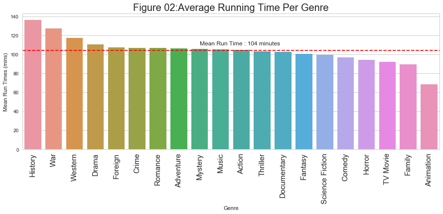
Observation: Average running time is 104 minutes.History, war, western and drame movies are above the average running time. These genre's could also reflect the age of people - mostly older people that have more time and less busy.
Crime, romance, adventure, mystery, music, action, thriller are very close to the mean run time. Further investigation could be done to see the deviation of run time of profitable movies in each genre.
It makes sense to have shorter animation movies (about 70 minutes), considering they are geared towards children.
Who are the top 10 most common movie directors?
#input: function takes the movie dataset
#process: calculates the most common movie directors
#output: returns a graph
def common_movie_directors(df):
ax=df.director.value_counts().head(10).plot(kind='bar', figsize=(10,5))
ax.set_title('Figure 03:Top 10 Most Common Movie Directors', fontsize=20)
ax.set_xlabel('Name of Movie Director')
ax.set_ylabel('Number of Movies Directed');
common_movie_directors(df)
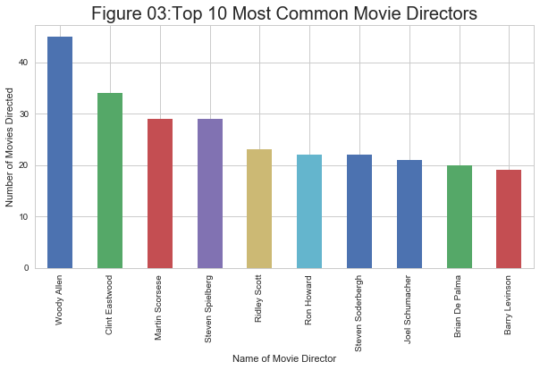
Observation: Woody Allen was the most common director followed by Clint Eastwood.Also, interesting to note that Steven Spielberg is the 4th most common director. Even though the above graph shows most common directors, it would be interesting to find out who are the directors that made the most profitable movies.
Which movie directors made movies that made the most profit?
How good are the above move directors in terms of profit?
#input: function takes in the movie dataset
#process: function calculates the most common movie directors
#out: function returns a graph
def most_profitable_directors(df):
ax=df.groupby('director')['profit'].sum().reset_index().sort_values('profit',ascending=False).head(10).plot(kind='bar',x='director',y='profit', figsize=(10,5))
ax.set_title('Figure 04:Top 10 Most Profitable Movie Directors',fontsize=20)
ax.set_xlabel('Name of Movie Director')
ax.set_ylabel('Profit From Movie $');
most_profitable_directors(df)

Observation: The above graph shows that most common movie directors are not the most profitable ones. Steven Speilberg is the most profitable movie director. Note, that Clint Eastwood is not even in the top 10 of the most profitable movie directors. It would be interesting to further explore the profitable movie directors in each genre.
List the most profitable movie director in each genre?
#input: function receives the movie dataset and n - the number of movie directors in each genre
#process: function calculates the most profitable movies in each genre
#output: function return a dataframe
def profitable_directors_df(df,n):
genres=df['genres'].str.split('|', expand=True) #split the genres by |
tmp_01=pd.concat([df.profit,df.director,genres],axis=1) #join genres with columns from df
#melt the genre so its in one column and do clean up
tmp_02=pd.melt(tmp_01,id_vars=['profit','director'],value_name='genre')
tmp_02=tmp_02.drop(columns=['variable']) #drop variable column generated during melt
tmp_02=tmp_02.loc[tmp_02.genre.notna()] # remove nan, None from genre column
#group by genre, director and take sum of profits
tmp_03=tmp_02.groupby(['genre','director']).sum().reset_index()
#run through a for loop and sort values in each genre in descreasing order and take its head
my_df=pd.DataFrame()
for i in tmp_03.genre.unique():
t=tmp_03[tmp_03.genre==i].sort_values(['profit'],ascending=False).head(n)
my_df = pd.concat([my_df, t])
#return the my_df containing top n most profitable movie directors
return my_df
#List of most profitable directors in each genre
profitable_directors_df(df,1)
| genre | director | profit | |
|---|---|---|---|
| 990 | Action | Peter Jackson | 3760522601 |
| 2078 | Adventure | Peter Jackson | 5174068099 |
| 2412 | Animation | Carlos Saldanha | 2169451792 |
| 3138 | Comedy | Carlos Saldanha | 2169451792 |
| 5117 | Crime | Christopher Nolan | 1939896615 |
| 6129 | Documentary | Michael Moore | 157654012 |
| 6676 | Drama | Christopher Nolan | 2398610576 |
| 8944 | Family | David Yates | 3379295625 |
| 10046 | Fantasy | Peter Jackson | 4857642820 |
| 10233 | Foreign | A.R. Murugadoss | 66900000 |
| 10650 | History | Steven Spielberg | 771465588 |
| 11677 | Horror | Stephen Sommers | 777359263 |
| 11884 | Music | Emile Ardolino | 408559424 |
| 12503 | Mystery | M. Night Shyamalan | 1133036898 |
| 13185 | Romance | James Cameron | 1644888402 |
| 14260 | Science Fiction | James Cameron | 3169037393 |
| 14858 | TV Movie | Geoffrey Sax | 37000000 |
| 15628 | Thriller | James Cameron | 2533448145 |
| 16888 | War | Steven Spielberg | 994985006 |
| 16972 | Western | Kevin Costner | 448505141 |
Observation: The most profitable movie directors in action and adventure is Peter Jackson, while Steven Spielberg is profitable in War and History. It would be interesting to further investigate movie directors in second and third place for each genre as this may also help with the movie being profitable overall.
Are there any directors that standout and appear in multiple genres for the top 10 movies directored?
#input: the function takes the movie dataset, a genre name and the number of directors
#process: the function makes a plot of specific for profitable movie directors in a genre
#output: returns the plot
def top_genre_directors_plot(df,selected_genre,number_of_directors):
#number_of_directors=15
tmp=profitable_directors_df(df,number_of_directors)
ax=tmp[tmp.genre==selected_genre].plot(x='director',y='profit',figsize=(10,5),kind='bar')
ax.set_title('Figure 05: Top '+str(number_of_directors)+' Most Profitabe Movie Directors in '+ selected_genre+' Genre');
'''
This function basically, finds the genres that are avalible in the movie dataset and returns
the names that will later be used in the dropdown input
'''
def get_genre(df):
genres=df['genres'].str.split('|', expand=True) #split the genres by |
tmp_01=pd.concat([df.original_title,genres],axis=1) #join genres with columns from df
#melt the genre so its in one column and do clean up
tmp_02=pd.melt(tmp_01,id_vars=['original_title'],value_name='genre')
tmp_02=tmp_02.drop(columns=['variable']) #drop variable column generated during melt
tmp_02=tmp_02.loc[tmp_02.genre.notna()] # remove nan, None from genre column
return tmp_02.genre.unique()
Please note that the interactive graph below will only render in jupyter notebook.
genres_list=get_genre(df)
t1=wg.Dropdown(options=genres_list,description='Select Genre:')
t2=wg.IntSlider(value=10,min=5,max=20,step=1,description='Number')
wg.interact(top_genre_directors_plot,df=fixed(df),selected_genre=t1,number_of_directors=t2);
Failed to display Jupyter Widget of type interactive.
If you're reading this message in the Jupyter Notebook or JupyterLab Notebook, it may mean that the widgets JavaScript is still loading. If this message persists, it likely means that the widgets JavaScript library is either not installed or not enabled. See the Jupyter Widgets Documentation for setup instructions.
If you're reading this message in another frontend (for example, a static rendering on GitHub or NBViewer), it may mean that your frontend doesn't currently support widgets.
Observation: Steven Spielberg appears in the top 10 for the following genres: action,adventure,science fiction,drama, family,war,mystery,thriller,fantasy,history,horror. (These observations can also be made from the graphs below just in case the above graph did not render properly.)
Breakdown of the above interactive graph
get_genre(df)
array(['Action', 'Adventure', 'Western', 'Science Fiction', 'Drama',
'Family', 'Comedy', 'Crime', 'Romance', 'War', 'Mystery',
'Thriller', 'Fantasy', 'History', 'Animation', 'Horror', 'Music',
'Documentary', 'TV Movie', 'Foreign'], dtype=object)
for i in get_genre(df):
#print(i)
top_genre_directors_plot(df,i,10)
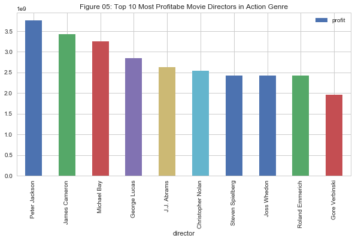
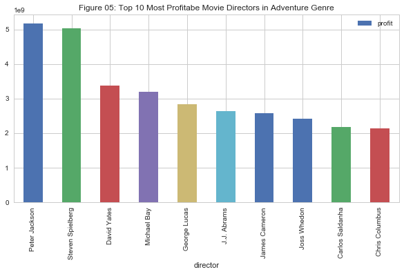
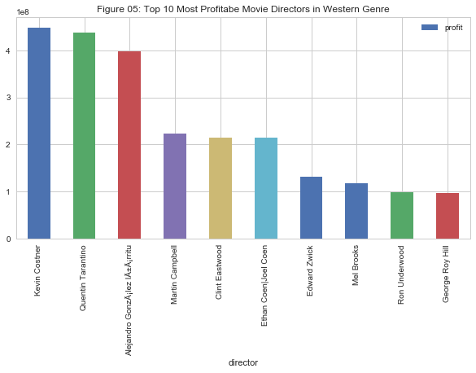
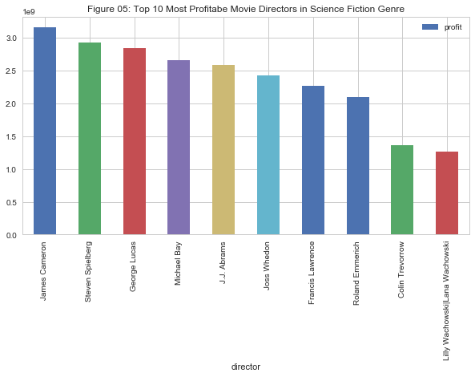
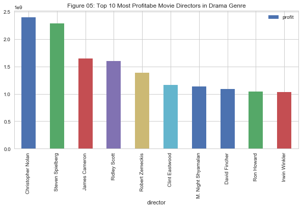

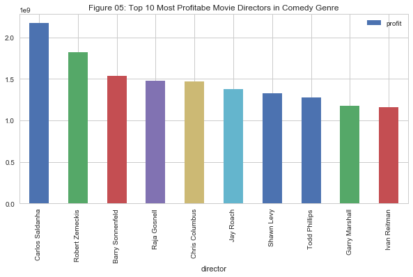
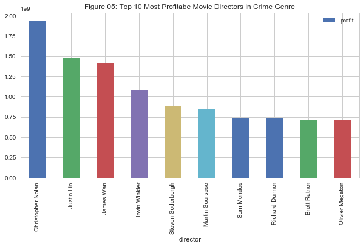

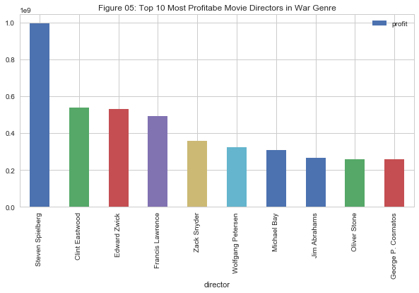
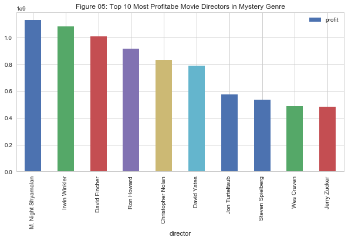

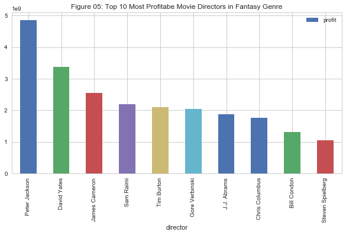
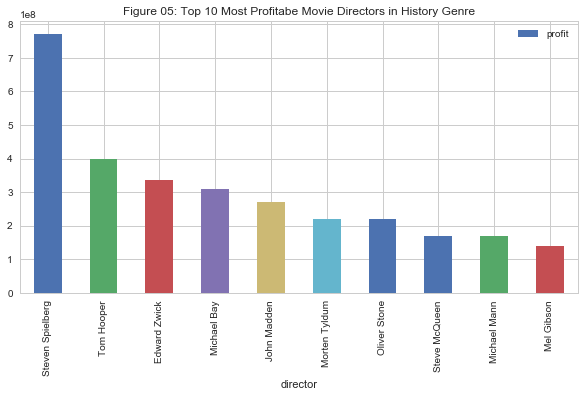
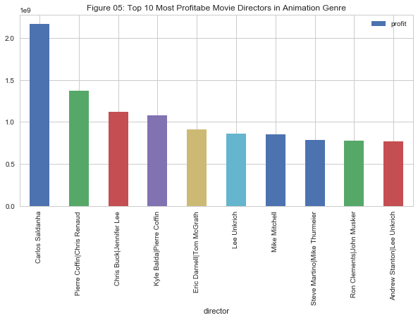


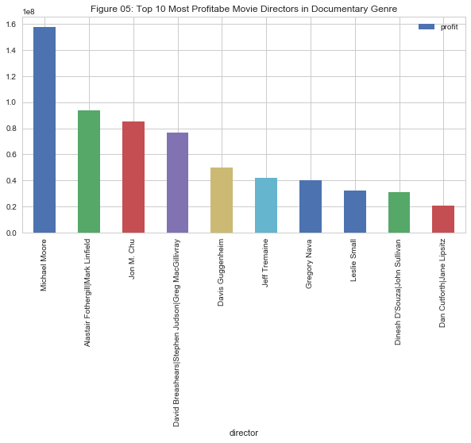

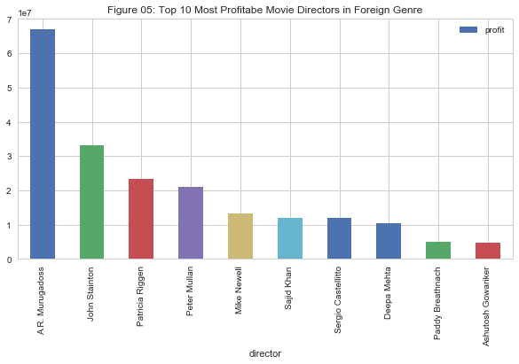
References
https://stackoverflow.com/questions/38807895/seaborn-multiple-barplots
https://pandas.pydata.org/pandas-docs/stable/generated/pandas.melt.html
https://stackoverflow.com/questions/19377969/combine-two-columns-of-text-in-dataframe-in-pandas-python
https://stackoverflow.com/questions/15705630/python-getting-the-row-which-has-the-max-value-in-groups-using-groupby
http://pandas.pydata.org/pandas-docs/version/0.17.0/generated/pandas.core.groupby.DataFrameGroupBy.idxmax.html
https://stackoverflow.com/questions/28669459/how-to-print-variables-without-spaces-between-values/28669560
http://pandas.pydata.org/pandas-docs/version/0.17.0/generated/pandas.DataFrame.isin.html
http://pandas.pydata.org/pandas-docs/version/0.17.0/generated/pandas.DataFrame.isin.html
https://stackoverflow.com/questions/11285613/selecting-columns-in-a-pandas-dataframe
https://stackoverflow.com/questions/38683709/python-pandas-how-to-set-dataframe-column-value-as-x-axis-labels
https://matplotlib.org/api/pyplot_api.html#matplotlib.pyplot.axhline
https://stackoverflow.com/questions/17141558/how-to-sort-a-dataframe-in-python-pandas-by-two-or-more-columns